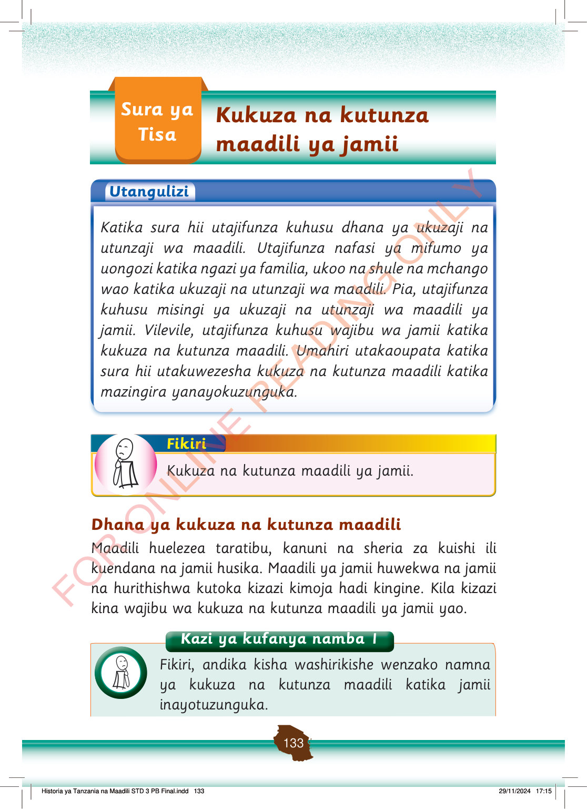

Sura ya Tisa
Kukuza na kutunza maadili ya jamii
Utangulizi
Katika sura hii utajifunza kuhusu dhana ya ukuzaji na utunzaji wa maadili.
Utajifunza nafasi ya mifumo ya uongozi katika ngazi ya familia, ukoo na shule na mchango wao katika ukuzaji na utunzaji wa maadili.
Pia, utajifunza kuhusu misingi ya ukuzaji na utunzaji wa maadili ya jamii.
Vilevile, utajifunza kuhusu wajibu wa jamii katika kukuza na kutunza maadili.
Umahiri utakaoupata katika sura hii utakuwezesha kukuza na kutunza maadili katika mazingira yanayokuzunguka.
Fikiri
Kukuza na kutunza maadili ya jamii.
Dhana ya kukuza na kutunza maadili
Maadili huelezea taratibu, kanuni na sheria za kuishi ili kuendana na jamii husika.
Maadili ya jamii huwekwa na jamii na hurithishwa kutoka kizazi kimoja hadi kingine.
Kila kizazi kina wajibu wa kukuza na kutunza maadili ya jamii yao.
Kazi ya kufanya namba 1
Fikiri, andika kisha washirikishe wenzako namna ya kukuza na kutunza maadili katika jamii inayotuzunguka.